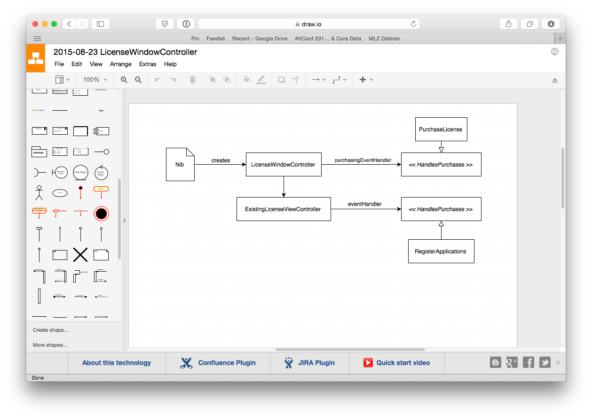
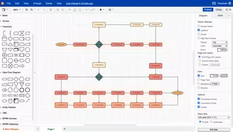

Sektsioon I · Milan
draw.io (diagrams.net)
Tasuta veebipõhine diagrammide loomise tööriist
Ajalugu
- Looja: JGraph Ltd
- Käivitamine: 2010. aasta
- Eesmärk: Pakkuda tasuta ja lihtsat diagrammitööriista kõigile
- Areng: Tuntud kui diagrams.net; integreeritud Google Drive'i ja OneDrive'iga
Põhifunktsioonid
- Toetab UML diagramme (klass, sequence jne)
- Flowchartid, ER-diagrammid ja BPMN
- Töötab otse brauseris (installi pole vaja)
- Failide salvestamine Google Drive'i, OneDrive'i või lokaalselt
- Reaalajas koostöö
- Ekspordi PNG, PDF, SVG formaatidesse
- Täiesti tasuta ja open-source


×